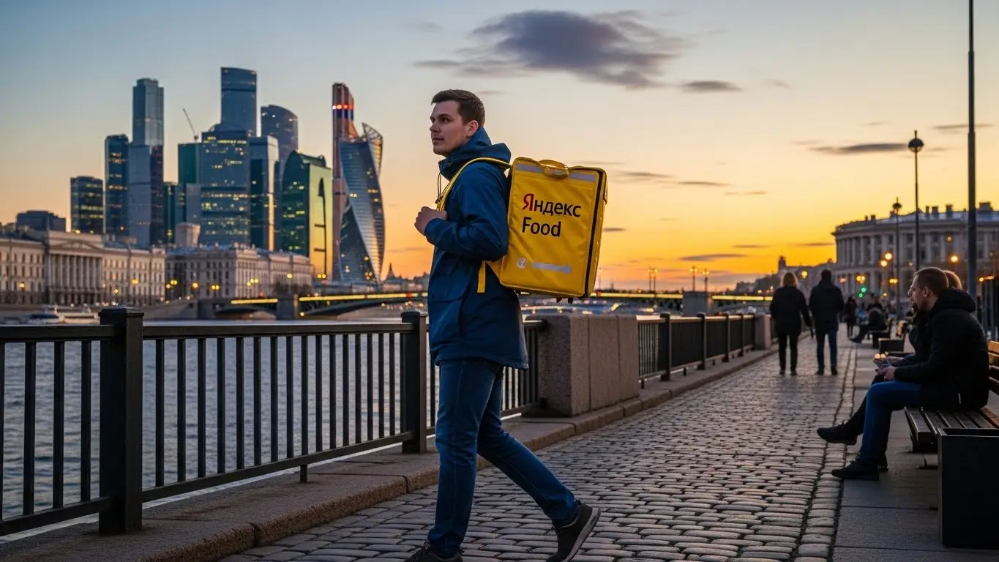
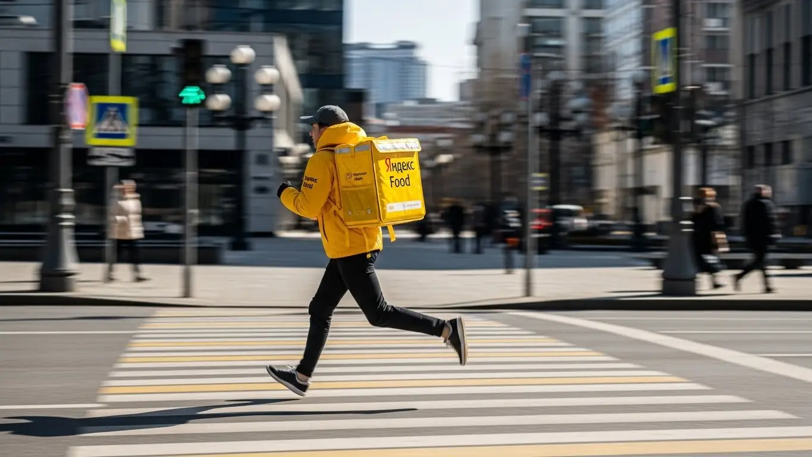

Доход курьера Яндекс Еды в Курске в 2025-2026: условия и отзывы
- Работа курьером Яндекс Еды в Курске: для кого эта вакансия и что вы получите
- Сколько вы будете зарабатывать курьером в Курске: калькулятор дохода и разбор выплат
- Реальный заработок курьера в Курске: смены и месячный доход
- График работы и форматы занятости
- Требования к кандидату и документы
- Самозанятость, налоги и юридическая чистота
- Пошаговое оформление и первый выход на линию в Курске
- Пешком, на вело или на авто: что выгоднее в Курске
- Районы, маршруты и «топовые» зоны заказов в Курске
- Безопасность, страховка, штрафы и оплата простоя
- Плюсы и возможные минусы работы курьером в Курске
- Реальные истории и отзывы курьеров из Курска
- Ответы на главные вопросы о работе курьером Яндекс Еды в Курске
- Короткие ответы на главные вопросы
- Заключение: твой следующий шаг в Курске
Все города
Здорово, будущий коллега! Тоже задумался о работе курьером Яндекс Еды в Курске? Думаешь, всё просто — взял сумку и погнал рубить бабло? А как насчет пробок на Ленина в час пик, убитых дорог в частном секторе на Волокно и клиентов, которые ждут заказ на девятом этаже без лифта в спальнике на Клыкова? В сети полно сладких обещаний про «доход до 100 тысяч», но я расскажу, как обстоят дела на самом деле — здесь, на наших курских улицах, где зимой бывает лютый гололёд, а летом — жара.
Поверь, разница между тем, кто стабильно делает в Курске 3-4 тысячи в день, и тем, кто едва отбивает бензин, — не в скорости. Она в голове. Нужно понимать, что твой чистый доход — это не просто цифра в приложении. Из неё нужно вычесть налог самозанятого, расходы на транспорт и связь. А ещё есть приоритет, который решает, кому достанутся самые жирные заказы из ресторанов в центре, а кто будет возить один бургер на окраину Северо-Западного. Большинство новичков сливаются в первый же месяц, потому что наступают на одни и те же грабли, не зная этих нюансов.
Чтобы ты не пополнил их ряды, мы всё разложим по полочкам. В этом гиде я честно посчитаю, сколько реально можно заработать в Курске пешком, на велосипеде и на авто, с учётом наших цен и расстояний. Покажу на карте, где самые денежные районы, а куда лучше не соваться в плохую погоду. Разберём, как работает система штрафов и как их не получать. Сравним условия с другими доставками, которые есть у нас в городе, и расскажу, на что жалуются и что хвалят реальные курские курьеры. Если хочешь сразу перейти к цифрам и подать заявку, вся актуальная информация собрана на официальной странице: работа курьером Яндекс Еда в Курске.
Меня зовут Алексей. Я сам откатал не одну тысячу километров с желтой сумкой по Курску, а сейчас у меня свой небольшой таксопарк-партнёр. Так что я видел эту кухню со всех сторон — и как простой курьер, и как тот, кто помогает ребятам выходить на линию. Забудь про рекламную шелуху. Здесь будет только мясо: цифры, лайфхаки и честный опыт. Готов? Тогда давай по порядку, сейчас всё разложу.
Для начала — короткий гид по главным темам статьи, чтобы ты сразу нашёл то, что волнует больше всего.
Ключевые вопросы о работе курьером в Курске: коротко о главном
В этой статье ты ТОЧНО узнаешь:
- Сколько реально можно заработать в Курске за смену пешком, на вело и на авто, уже за вычетом расходов?
- В каких районах Курска больше всего заказов и как не кататься по городу впустую?
- За что на самом деле штрафуют и как рейтинг влияет на то, кому достанутся лучшие заказы?
- Что такое самозанятость, сколько платить налогов и почему это проще, чем кажется?
- Как погода, время суток и выбор слотов в «Яндекс Про» напрямую влияют на итоговый доход?
- Что такое «оплата простоя» и как бесплатная страховка защищает курьера на смене?
А если тебе некогда читать всю статью — переходи сразу к заключению, где ты найдёшь короткие ответы на все эти вопросы и указания, в каких разделах искать подробности.
А вот ключевые цифры и факты о работе в Курске в одной картинке.
Работа курьером в Курске: ключевые цифры
Доход в час
350–500 ₽
В часы пик с учетом бонусов и коэффициентов
За смену 8 часов
2 800–4 000 ₽
Средний заработок за полный рабочий день
Чаевые от клиентов
+15-20%
Дополнительно к доходу, полностью ваши
График работы
Свободный
Выбираете слоты от 2 часов в удобное время
Работа курьером Яндекс Еды в Курске: для кого эта вакансия и что вы получите
Кому подойдёт эта работа в Курске
Давай начистоту: работа курьером не для всех, но для многих в Курске она станет отличным решением. В первую очередь, это идеальный вариант для студентов: свободный график легко подстроить под учёбу, чтобы выходить на пару часов после пар и иметь свои деньги. Во-вторых, это хороший старт для тех, у кого нет опыта. Здесь не требуют диплом или резюме — главное твоя ответственность и желание работать.
Это также отличная подработка для тех, у кого уже есть основная занятость, но нужны дополнительные деньги — можно выходить на смены по вечерам или в выходные. И конечно, это хороший вариант для водителей на своём авто, которые ищут стабильный поток заказов. Если тебе важен свободный график и быстрые ежедневные выплаты, эта вакансия курьера точно для тебя.
Главные преимущества для жителей районов Центральный, Сеймский, Железнодорожный
Одно из главных удобств — возможность работать прямо в своём районе, не тратя время на дорогу до офиса. Живёшь, например, в Сеймском округе, в районе КЗТЗ — просто включаешь приложение «Яндекс Про», берёшь термокороб и начинаешь выполнять заказы рядом с домом. То же самое касается и жителей Железнодорожного или Центрального округов.
В каждом крупном жилом массиве Курска, будь то Северо-Западный микрорайон или проспект Победы, есть свои точки притяжения — кафе, рестораны, магазины. Это значит, что заказы будут всегда, и тебе не придётся мотаться через весь город. Ты экономишь время, силы и деньги на проезд, а работаешь в знакомой и понятной локации.

Краткое обещание по доходу и условиям
Что касается денег, то зарплата курьера в Курске — это не пустые обещания, а реальные цифры. При частичной занятости, работая по 3–4 часа в день, можно спокойно получать 1500–2500 рублей за смену. Если же рассматривать это как основную работу, то активные автокурьеры при полной занятости выходят на доход до 70 000 – 85 000 рублей в месяц. Всё зависит от твоего графика, скорости и транспорта.
Ключевые условия работы в Яндекс Еда просты и прозрачны: ты работаешь, когда хочешь, и получаешь ежедневные выплаты на свою карту. Никакого опыта не требуется — всему научат на коротком онлайн-инструктаже. Ты сам себе начальник, планируешь свой день и напрямую влияешь на свой заработок.
Сколько вы будете зарабатывать курьером в Курске: калькулятор дохода и разбор выплат
Из чего складывается доход курьера
Твой заработок — это не фиксированная ставка, а конструктор, который складывается из нескольких частей. Во-первых, это базовая оплата за каждый выполненный заказ. Во-вторых, доплата за расстояние — чем дальше везти, тем больше платят. В-третьих, в часы пик (обед, ужин, выходные) и в плохую погоду включаются повышающие коэффициенты, которые могут увеличить стоимость заказа в 1,5–2 раза.
Кроме того, есть бонусы за выполнение определённого количества заказов и чаевые от клиентов — они полностью твои. Важное преимущество Яндекс Еды — оплата простоя. Если ты на плановом слоте, но заказов мало, сервис всё равно начислит минимальную гарантированную сумму. А для пеших курьеров на дальних маршрутах может быть предусмотрена компенсация проезда.
Как пользоваться калькулятором дохода
На странице вакансии ты найдёшь простой калькулятор — это полезный инструмент для планирования. Чтобы им воспользоваться, просто выбери три параметра: твой город (Курск уже будет стоять по умолчанию), тип доставки (пеший курьер, на велосипеде или на авто) и сколько часов в день ты планируешь работать.
Рассчитайте свой примерный доход в Курске
Примерный доход в месяц
76 000 ₽
Это ориентировочный расчёт. Реальный заработок зависит от спроса, вашего рейтинга, бонусов и выбранных слотов.
Калькулятор покажет примерный диапазон твоего возможного дохода за день и в месяц. Конечно, это ориентировочные цифры, ведь реальный заработок курьера зависит от спроса и твоей скорости. Но этот инструмент даёт хорошее представление о том, на какие суммы можно рассчитывать и помогает выбрать наиболее выгодный для себя формат работы. Чтобы увидеть самые актуальные условия и требования, а также сразу заполнить анкету, загляни на официальную страницу: работа курьером Яндекс Еда в твоём городе.
Примеры расчёта для пешего, вело- и авто‑курьера в Курске
Давай разберём на конкретных примерах для Курска.
- Пеший курьер-студент. Работает по 4 часа вечером в будни, в основном в центре — район улицы Ленина, вокруг ТЦ «Пушкинский». Заказы короткие, из кафе и ресторанов. В среднем за такую смену заработок составляет 1400–1800 рублей.
- Велокурьер на подработке. Выходит на 6–8 часов в выходной день. Маршруты длиннее, например, между Северо-Западным районом и центром. За счёт скорости он выполняет больше заказов, чем пеший. Его дневной доход может составить 2500–3500 рублей.
- Водитель-курьер на полной занятости. Работает 5 дней в неделю по 8–10 часов. Берёт заказы по всему городу, включая дальние доставки. В дождь или снегопад его доход резко возрастает за счёт коэффициентов. В месяц такой курьер в Курске может зарабатывать 75 000 рублей и больше, уже за вычетом расходов на топливо.
Вот реальный пример: курьер на автомобиле по имени Андрей выходит на линию в основном в пиковые часы — с 12 до 15 и с 18 до 22. Он работает в зонах с высоким спросом, которые подсвечиваются в приложении «Яндекс Про», часто это район ТЦ «МегаГРИНН» и проспект Клыкова. За прошлую неделю, работая в таком режиме неполный день, он заработал около 18 000 рублей. Его главный принцип — не стоять на месте, а постоянно перемещаться в «фиолетовые» зоны на карте.
В итоге, твой заработок напрямую зависит от выбранной стратегии. Чтобы получать больше, нужно анализировать спрос, выбирать правильное время и не бояться работать в непогоду. Всегда следи за картой в «Яндекс Про» — это твой главный инструмент для увеличения дохода.
Реальный заработок курьера в Курске: смены и месячный доход
Теперь к главному, без рекламных обещаний: сколько реально зарабатывает курьер в Яндекс Еде? Единого ответа нет. Твой доход в Курске — это не фиксированная зарплата, а результат твоей работы, умноженный на спрос. Он зависит от того, какой ты курьер — пеший, на велосипеде или на своем авто, — а также когда и где работаешь. Но я могу дать тебе вполне реальные цифры из своей практики и опыта моих ребят.
Главное, что нужно понять: твой заработок полностью в твоих руках. Можно выходить на пару часов после работы в формате подработки, а можно трудиться полный день и зарабатывать на уровне офисного специалиста. Только здесь у тебя свободный график и нет начальника. Дальше разберём все условия работы по косточкам.

Диапазон дохода для подработки и полной занятости
Если ты ищешь подработку на несколько часов в день, чтобы закрыть мелкие расходы или накопить на что-то, цифры в Курске будут примерно такие. Выходя на 2–4 часа в день, 4–5 дней в неделю, пеший курьер или велокурьер может спокойно делать 800–1500 рублей за смену. В месяц это выливается в 15 000 – 25 000 рублей. Для студента или как дополнение к основной зарплате — вполне достойно. Курьер на своем авто за то же время заработает чуть больше, около 1200–2000 рублей, но не забывай вычитать расходы на бензин.
При полной занятости, когда ты работаешь по 8–10 часов, картина совсем другая. Пеший курьер или велокурьер в хорошем темпе может зарабатывать 2000–3500 рублей в день. За полный рабочий месяц выходит от 45 000 до 70 000 рублей. Водитель-курьер на своем авто при полной загрузке может рассчитывать на 3000–5000 рублей в день, что в месяц даёт 60 000 – 90 000 рублей «грязными». Чистый доход будет зависеть от расхода топлива и амортизации машины, но всё равно цифры серьёзные.
Как район, время суток и погода влияют на доход
Запомни три кита высокого заработка: время, место и погода. В Курске, как и везде, есть часы пик: обед с 12:00 до 15:00 и ужин с 18:00 до 21:00. В это время заказов вал, и сервис включает повышающие коэффициенты — карта в приложении «Яндекс Про» окрашивается в фиолетовый цвет. Работать в такое время выгоднее всего. То же самое касается вечеров пятницы и выходных дней.
Погода — твой лучший друг. Как только начинается дождь, снегопад или сильная жара, большинство курьеров предпочитают сидеть дома. А вот количество заказов, наоборот, взлетает до небес. Коэффициенты растут, а клиенты становятся щедрее на чаевые, потому что ценят твою работу в непростых условиях. Районы тоже играют роль. В центре, на улицах Ленина и Радищева, всегда много заказов из Яндекс Еды от кафе и ресторанов. В спальных районах, вроде Северо-Западного или Сеймского округа, отлично идут заказы Яндекс Доставки из продуктовых магазинов, особенно в вечернее время.
Советы по увеличению заработка от опытных курьеров
Чтобы не просто работать, а именно зарабатывать, нужно подходить к делу с умом. Во-первых, планируй свои выходы. Заранее бронируй плановые слоты в приложении на самое выгодное время — вечера и выходные. Они разлетаются быстро. Во-вторых, изучи карту спроса в «Яндекс Про». Не стоит срываться через весь город за одним заказом с высоким коэффициентом. Лучше выбрать одну зону с постоянным спросом, например, в районе ТРЦ «МегаГРИНН» или «Central Park», и работать там.
Не брезгуй мультизаказами, когда забираешь несколько посылок из одного места и развозишь по разным адресам по пути — это экономит время и увеличивает доход в час. Всегда будь вежлив с клиентами и сотрудниками ресторанов, это напрямую влияет на чаевые и твой рейтинг в системе. И держи при себе пауэрбанк — севший телефон посреди смены равносилен простою и потере денег.
Вот пример из жизни: один мой парень-велокурьер как-то отработал 4 часа в дождливый пятничный вечер в центре. Из-за дикого спроса и высоких коэффициентов он сделал 12 заказов и заработал почти 2500 рублей, включая 400 рублей чаевыми. В обычный день за то же время он бы получил в полтора раза меньше.
В итоге, твой реальный заработок — это не случайность, а результат грамотного планирования. Чтобы максимизировать доход, лови пиковые часы, не бойся плохой погоды и работай в зонах с высоким спросом. Новичкам без опыта советую начинать с коротких смен в центре, чтобы набить руку и понять механику процесса.
График работы и форматы занятости
Главный плюс работы курьером — свободный график. Ты сам себе начальник и решаешь, когда и сколько работать. Никто не будет стоять над душой и требовать сидеть «от звонка до звонка». Это идеальный вариант для тех, кто хочет совмещать доставку с учёбой, основной работой или просто ценит свободу. Приложение «Яндекс Про» — твой рабочий кабинет, где ты управляешь своим временем.
Такая свобода позволяет выстроить график под любую жизненную ситуацию. Хочешь — выходи каждый день на пару часов, хочешь — работай только по выходным, но полный день. Главное — подходить к планированию ответственно, чтобы и заработать успеть, и не перегореть от усталости.
Подработка после учёбы или основной работы
Совмещать доставку с другими делами проще простого. Вот пара реальных примеров из Курска. Есть у меня знакомый студент КГУ, живёт в общежитии в центре. Учёба у него заканчивается в три часа дня. Он берёт велосипед и выходит на 4-часовой слот с 17:00 до 21:00, как раз захватывая вечерний пик заказов. Катается по Центральному округу, где всё рядом. За неделю набегает 4-5 таких смен, что приносит ему стабильные 15-20 тысяч в месяц. На карманные расходы, развлечения и помощь родителям хватает с головой.
Другой пример — менеджер, который работает в офисе с 9 до 18. Он подрабатывает как водитель-курьер на своем авто. Чтобы быстрее закрыть кредит, он три-четыре раза в неделю после работы выходит на линию на 3 часа, а в субботу работает почти весь день. Он предпочитает брать заказы Яндекс Доставки на дальние расстояния или крупные доставки из гипермаркетов. Такая подработка приносит ему дополнительные 25-30 тысяч рублей в месяц. График он строит сам, и если устал или есть другие планы — просто не выходит на смену.
Полная занятость: как выглядит типичный день курьера
Если рассматривать доставку как основную работу, то день строится по чёткому плану. Типичный день курьера на полной занятости в Курске выглядит так. Он выходит на линию около 10 утра, начинает со своего спального района, например, с проспекта Победы, развозя заказы Яндекс Еды и доставки из ближайших магазинов. К 12 часам дня он смещается в центр, в район улицы Ленина, где начинаются обеденные заказы из офисов. Здесь работа кипит до 15:00.
После обеденного пика наступает небольшое затишье. Это время можно использовать для обеда, отдыха или выполнения нескольких дальних, но дорогих заказов. С 18:00 начинается вторая волна — вечерний пик. Курьер снова возвращается в жилые кварталы, например, в Сеймский округ, где люди массово заказывают ужины на дом. Смена обычно заканчивается в 21:00-22:00. Такой ритм позволяет за 8-10 часов на линии выполнить 20-30 заказов и получить хороший дневной доход.
Как планировать слоты и выходы через приложение «Яндекс Про»
«Яндекс Про» — твой главный инструмент. В нём ты не только видишь заказы, но и планируешь всю свою работу. В приложении есть расписание, где можно забронировать плановые слоты на неделю вперёд. Самые «жирные» слоты — вечерние и на выходные — разбирают очень быстро, поэтому лучше планировать свою занятость заранее. Выбирая слот, ты также указываешь район, в котором хочешь начать работу.
Очень важна дисциплина. Если ты записался на слот, нужно выйти на линию вовремя, в выбранной зоне. Постоянные опоздания или пропуски смен негативно сказываются на твоём рейтинге и уровне приоритета. Система устроена так, что более надёжные и активные курьеры получают заказы Яндекс Еды и Доставки первыми. Поэтому, чтобы иметь стабильный поток заказов и хороший доход, относись к своему графику серьёзно. Смотри на карту спроса перед началом смены: если видишь «фиолетовую» зону с высокими коэффициентами, есть смысл начать именно оттуда.
Вот ещё один пример из жизни: у меня есть водитель, который работает полный день и подходит к планированию как к шахматной партии. Он заранее бронирует 10-часовые слоты на будни, но всегда планирует себе двухчасовой перерыв днём, когда заказов меньше. А на выходные берёт два отдельных 4-часовых слота, чтобы отработать обеденный и вечерний пики по максимуму, а в перерыве отдохнуть. Такой подход позволяет ему стабильно зарабатывать и не выгорать.
В общем, гибкий график — это не анархия, а возможность управлять своим временем эффективно. Используй приложение «Яндекс Про» с умом, планируй смены заранее и будь пунктуален. Это основа стабильного заработка без лишних нервов.
Требования к кандидату и документы
Многие думают, что устроиться курьером — это как на серьёзную должность: куча бумажек, строгий отбор и собеседования. На деле всё гораздо проще, но есть несколько ключевых моментов, которые нужно знать. Давай по порядку разберём, какие условия и требования для старта.
Возраст, гражданство и базовые условия
Начнём с главного. Стать курьером Яндекс Еды можно строго с 18 лет. Никаких исключений, это требование закона и связано с материальной ответственностью. Если тебе ещё нет восемнадцати, придётся немного подождать.
Второе важное условие — гражданство. Сервис напрямую сотрудничает с гражданами Российской Федерации и стран Евразийского экономического союза (ЕАЭС), куда входят Беларусь, Казахстан, Армения и Киргизия. Если у тебя паспорт одной из этих стран, проблем с оформлением не будет.
По физической форме и здоровью сверхтребований нет. Если ты можешь несколько часов подряд ходить пешком по центру Курска, например, по улице Ленина, или крутить педали в спальном районе вроде Северо-Западного, то с работой пешего или велокурьера точно справишься. Для водителя-курьера главное — наличие прав и умение ориентироваться в городском трафике.
Важное техническое условие — наличие смартфона на базе Android. Вся работа, от приёма заказов до получения ежедневных выплат, идёт через приложение «Яндекс Про».
Какие документы нужны для работы курьером
Пакет документов минимальный, никакой лишней бюрократии. Лучше подготовь всё заранее, чтобы процесс оформления прошёл максимально быстро. Вот что тебе понадобится:
- Паспорт. Основной документ для подтверждения твоей личности и возраста. Подойдёт паспорт РФ или страны ЕАЭС с необходимыми документами, разрешающими пребывание и работу в России.
- ИНН (Идентификационный номер налогоплательщика). Он нужен для регистрации в качестве самозанятого и уплаты налогов. Если ты не помнишь свой номер, его можно за пару минут бесплатно узнать на сайте Федеральной налоговой службы (ФНС).
- Банковская карта. Нужна карта любого российского банка, оформленная на твоё имя. Именно на неё ты будешь получать заработанные деньги, причём выплаты могут быть ежедневными.
- Медицинская книжка. Для доставки готовой еды из ресторанов и кафе она обязательна по закону. Если у тебя её нет — это не проблема. Часто партнёры сервиса помогают с её быстрым оформлением.
Можно ли работать с 16 лет и какие есть альтернативы
Это один из самых частых вопросов от молодых ребят. Отвечаю честно и прямо: устроиться в Яндекс Еду с 16 или 17 лет нельзя. Минимальный возраст для регистрации в сервисе и оформления самозанятости — 18 лет.
Это связано не с прихотью компании, а с законодательством. Работа курьером предполагает материальную ответственность за заказы и денежные средства, а также требует заключения официального договора, что в полной мере возможно только с совершеннолетними.
Если тебе 16–17 лет и очень хочется найти подработку в Курске, не отчаивайся. Рассмотри другие варианты: например, работу промоутером, раздачу листовок, помощь в летних кафе. Это даст тебе первый опыт и карманные деньги. А как только исполнится 18 — добро пожаловать в доставку.
Например, был у меня парень, студент КГУ, 20 лет. Искал подработку, но переживал, что без медкнижки его не возьмут. Я объяснил, что это не проблема: он заполнил анкету, а вопрос с книжкой решил уже в процессе через партнёра сервиса. В итоге уже через неделю вышел на линию в своём Северо-Западном районе. За первый же вечерний слот (4 часа) его доход составил около 1200 рублей. Главное — не бояться, а уточнять все детали.
В общем, требования простые: 18 лет, гражданство РФ/ЕАЭС, андроид-смартфон и базовый набор документов. Ничего сверхъестественного не требуется, главное — твоё желание работать. Мой совет: перед заполнением анкеты просто положи рядом паспорт и проверь, знаешь ли ты свой ИНН. Это сэкономит тебе время и нервы.
Самозанятость, налоги и юридическая чистота
Слово «самозанятость» многих пугает. Кажется, что это что-то сложное, связанное с налогами, отчётами и походами в госорганы. Расслабься. В реальности для курьера это самый простой, выгодный и полностью официальный способ работать. Давай разберёмся, как это устроено.
Почему курьеры Яндекс Еды работают как самозанятые
Самозанятость, или налог на профессиональный доход (НПД), — это специальный налоговый режим, который позволяет легально работать на себя. Ты не сотрудник в штате, а независимый партнёр-исполнитель, который оказывает услуги по доставке. Яндекс в этом случае — твой заказчик.
Главный плюс для тебя — это официальный доход. Все твои заработки «белые», их видят банки, а значит, при необходимости ты сможешь подтвердить свой заработок для получения кредита. При этом никакой сложной бухгалтерии: не нужно вести отчётность, заполнять декларации и ходить в налоговую. Всё происходит автоматически.
Такой формат работы даёт максимальную гибкость — ты сам решаешь, когда выходить на линию и сколько заказов выполнять. Есть и альтернативный вариант оформления через партнёра-таксопарк, как мой. Но для большинства новичков, которые хотят работать напрямую и получать выплаты каждый день, самозанятость — самый прямой и понятный путь.
Как за 10 минут оформить самозанятость через «Мой налог»
Процесс регистрации занимает реально не больше 10 минут, и для этого даже не нужно вставать с дивана. Всё, что тебе понадобится — это паспорт и смартфон.
Вот простая пошаговая схема:
- Скачай на свой Android-смартфон официальное приложение ФНС «Мой налог».
- Открой приложение и выбери способ регистрации. Самый быстрый и удобный — «По паспорту РФ».
- Отсканируй основной разворот паспорта прямо через камеру телефона. Программа сама распознает все данные.
- После сканирования приложение попросит тебя сделать селфи, чтобы подтвердить, что это действительно ты.
- Подтверди регистрацию. Вот и всё — ты официально стал самозанятым. Никаких госпошлин, очередей и бумажной волокиты.
После этого останется только привязать свой статус самозанятого в приложении «Яндекс Про». Система всё сделает сама: будет формировать чеки для клиентов и передавать данные о доходе в налоговую.
Сколько и как платить налоги
Теперь о самом важном — о деньгах. Ставка налога для самозанятых, работающих с юридическими лицами, фиксированная и очень низкая. Поскольку Яндекс — это организация, ты будешь платить 6% со своего дохода от заказов.
Как это работает на практике? Ты выполняешь заказы, получаешь за них деньги на карту. Вся информация о твоём заработке автоматически передаётся в приложение «Мой налог». Раз в месяц, до 12-го числа, там формируется квитанция на уплату налога за предыдущий месяц. Например, за октябрь ты заработал 40 000 рублей. Налог составит 2400 рублей. Тебе просто нужно зайти в приложение и оплатить эту сумму с банковской карты.
Работать официально и платить небольшой налог гораздо спокойнее и безопаснее, чем получать «серый» кэш и переживать. Это твоя юридическая чистота и уверенность в завтрашнем дне. Кроме того, всем новым самозанятым государство даёт приятный бонус — налоговый вычет в размере 10 000 рублей. Он будет автоматически применяться и уменьшать сумму твоего налога, пока не исчерпается.
У меня есть знакомый водитель-курьер, работает в основном по Железнодорожному округу Курска и часто берёт дальние заказы. Раньше он таксовал неофициально, боялся налогов как огня. Когда решил пойти в доставку, долго сомневался из-за самозанятости. Я ему просто показал на своём телефоне, как это работает. Он зарегистрировался прямо при мне за 5 минут. Через месяц пришёл первый налог — около 2500 рублей с его дохода. Он был удивлён, насколько всё просто и автоматизировано. Теперь говорит, что зря боялся и жалеет, что раньше не перешёл на легальную работу.
Итог по самозанятости: это не страшно, а наоборот — удобно и выгодно. Ты работаешь легально, платишь честный и низкий налог, а вся отчётность ведётся за тебя автоматически. Мой совет: не ищи «серых» схем. Оформи самозанятость один раз и работай спокойно, получая официальный доход каждый день.
Пошаговое оформление и первый выход на линию в Курске
Многие думают, что устроиться курьером долго и муторно, особенно без опыта. На деле всё гораздо проще и быстрее, если ты уже подготовил основные документы. Весь процесс, чтобы стать курьером Яндекс Еды, занимает от нескольких часов до одного дня. Система максимально автоматизирована, чтобы убрать лишнюю бюрократию и позволить тебе быстрее начать зарабатывать.
Шаг 1–2: анкета и онлайн‑обучение
Первый шаг — это заполнение короткой анкеты на сайте. Никаких вопросов про предыдущий опыт на трёх страницах. Понадобятся только базовые данные: ФИО, номер телефона, город — Курск. После этого тебе предложат скачать приложение «Яндекс Про» — твой главный рабочий инструмент. В нём ты продолжишь регистрацию и загрузишь фото необходимых документов. Стандартные требования — это паспорт и ИНН. Для работы также понадобится статус самозанятого, но его можно оформить онлайн за 10–15 минут.
Как только твои данные пройдут быструю проверку, откроется доступ к короткому онлайн-обучению. Это не нудные лекции, а несколько видеороликов и тестов. Тебе расскажут об основах работы с приложением, стандартах сервиса, правилах общения с клиентами и ресторанами, а также о безопасности на линии. Проходишь тесты — и ты практически готов к работе. Весь этот этап занимает не больше часа.
Шаг 3: получение сумки и доступа к заказам в Курске
Без фирменной термосумки или термокороба работать нельзя — это одно из ключевых условий для сохранения температуры заказов. В Курске получить экипировку можно несколькими способами, чаще всего через курьерские центры или офисы партнёров Яндекс Еды. После успешного прохождения обучения в приложении «Яндекс Про» появится карта с актуальными адресами и графиком работы таких точек.
Иногда сумку могут привезти доставкой, что ещё удобнее. В центре ты получаешь не только термокороб, но и полный доступ к заказам. Менеджер активирует твой профиль, и ты сразу увидишь на карте в приложении доступные слоты и зоны с повышенным спросом. С этого момента ты — полноценный курьер-партнёр сервиса.
Шаг 4: первый слот и первый доход
Теперь самое интересное — первый выход на линию. В приложении «Яндекс Про» ты увидишь расписание доступных слотов — это временные интервалы, в которые можно доставлять заказы. Для начала я советую выбрать короткий слот на 3–4 часа в знакомом районе. Например, если живёшь в Северо-Западном микрорайоне Курска, начинай работать там. Так ты будешь чувствовать себя увереннее, зная все дворы и короткие пути.
Выбираешь слот, приезжаешь в указанную зону, нажимаешь в приложении кнопку «На линии» — и ждёшь первый заказ. Обычно долго ждать не приходится, особенно в обеденное или вечернее время. Выполняешь несколько доставок, и вот на балансе уже первые заработанные деньги. Одно из главных преимуществ — ежедневные выплаты: доход можно выводить на карту в тот же день. Так, буквально за один день можно пройти путь от заполнения анкеты до реального заработка.
Кейс из практики: Парень, студент КГУ, искал подработку. В понедельник утром заполнил анкету, к обеду прошёл обучение. После пар заехал в офис партнёра на улице Карла Маркса, получил жёлтую термосумку. Вечером того же дня он взял первый слот на 4 часа в центре. Работал пешком в районе улиц Ленина и Радищева, где много кафе. За вечер выполнил 6 заказов и заработал свои первые 850 рублей, включая чаевые. Был удивлён, насколько всё быстро и просто оказалось на самом деле.
Краткий вывод: Процесс, как устроиться курьером, максимально упрощён и занимает минимум времени. Анкета, обучение, получение сумки и выход на линию — всё это можно сделать за один день. Мой совет: перед заполнением анкеты подготовь паспорт и ИНН, чтобы не тратить время на их поиски. Чем быстрее пройдёшь формальности, тем быстрее начнёшь зарабатывать.
Пешком, на вело или на авто: что выгоднее в Курске
Выбор транспорта — одно из ключевых решений, которое напрямую влияет на твой доход, усталость и районы работы. В Курске у каждого формата есть свои плюсы и минусы. Нет универсально «лучшего» варианта, есть тот, который подходит именно тебе, твоему району и стилю жизни. Кто-то любит ходить пешком и слушать музыку, кто-то — крутить педали и не зависеть от пробок, а кому-то важен комфорт автомобиля, особенно в плохую погоду.
Пеший курьер: для центра и плотной застройки в Курске
Если у тебя нет машины или велосипеда, формат пешего курьера — отличный старт. Он идеально подходит для работы в центре Курска. На улицах Ленина, Дзержинского, Радищева сосредоточено огромное количество ресторанов, кафе и магазинов. Расстояния между точками А (ресторан) и Б (клиент) здесь часто не превышают 1–1,5 км. На машине тут только мучиться с пробками и поиском парковки, а пешком ты быстро срежешь путь через дворы и скверы.
Плотная застройка и высокий спрос в центре означают, что заказы будут поступать один за другим, без долгих простоев. Ты не заработаешь на одном заказе столько, сколько водитель на дальней доставке, но возьмёшь количеством. Этот формат хорош для коротких слотов по 4–6 часов, как подработка после учёбы или основной работы. Плюс, это неплохая физическая нагрузка на свежем воздухе.
Велокурьер: быстрые доставки между спальными районами
Велосипед — это золотая середина между скоростью и затратами. Для Курска с его перепадами высот и растянутыми спальными районами это очень эффективный инструмент. Велокурьер легко объезжает пробки на проспекте Победы или улице 50 лет Октября в час пик и может покрывать расстояния в 3–7 км значительно быстрее пешего курьера. Это твой личный «оплачиваемый фитнес».
Особенно выгодно работать на велосипеде в крупных жилых массивах, например, в Северо-Западном или Юго-Западном микрорайонах. Там много заказов из гипермаркетов и пиццерий, а расстояния между домами приличные. Как курьер на велосипеде, ты сможешь выполнять больше заказов в час, чем пеший, а значит, и твой доход будет выше. Главное — следить за состоянием велосипеда и своей безопасностью на дороге.
Водитель‑курьер: заказы по всему городу и пригороду посёлок Северный, деревня Щетинка
Работа водителем-курьером на своем авто открывает доступ к самым дорогим и дальним заказам. Это твой главный козырь в плохую погоду — когда идёт дождь или снег, количество заказов резко возрастает, а пеших и велокурьеров на линии становится меньше. В это время включаются повышенные коэффициенты, и заработок может вырасти в 1,5–2 раза. На машине ты можешь комфортно работать в любую погоду.
Водитель-курьер незаменим для доставок между отдалёнными районами, например, из центра в Железнодорожный округ или на Волокно. Также на авто выгодно возить заказы в пригородные посёлки, такие как посёлок Северный, деревня Щетинка или посёлок Маршала Жукова. Кроме того, на машине можно выполнять крупные заказы из гипермаркетов, которые пеший курьер просто не унесёт. Да, есть расходы на бензин и амортизацию, но при грамотном подходе доход их с лихвой перекрывает.
Сравнение форматов доставки в Курске
| Параметр | Пеший курьер | Велокурьер | Водитель-курьер |
|---|---|---|---|
| Оптимальные районы | Центр (ул. Ленина, Дзержинского), плотная застройка | Спальные районы (Северо-Западный, Юго-Западный) | Весь город, дальние районы, пригород |
| Средний доход в час | Низкий | Средний | Высокий |
| Плюсы | Нет затрат, фитнес, манёвренность в центре | Скорость, нет пробок, экономия на транспорте | Комфорт, большие заказы, высокий доход в непогоду |
| Минусы / Расходы | Низкая скорость, зависимость от погоды, физическая нагрузка | Нужен велосипед, усталость, сезонность | Расходы на бензин и обслуживание авто, пробки, парковка |
Кейс из практики: Мой знакомый, водитель-курьер, специально берёт слоты в пятницу вечером, особенно если прогноз обещает дождь. Он не лезет в самый центр, а выбирает зону на окраине Северо-Западного района. Оттуда часто падают заказы в пригород и на другой конец города. В один такой дождливый вечер за 6-часовой слот он сделал 12 дальних доставок с высоким коэффициентом и заработал около 4500 рублей «грязными». После вычета бензина осталось около 3800 рублей — отличный результат.
Краткий вывод: Условия работы в Курске позволяют найти свою нишу в любом формате. Пеший курьер хорош для старта и работы в центре, велокурьер — для скорости в спальных районах, а водитель-курьер зарабатывает больше всех на дальних заказах и в плохую погоду. Мой совет: если у тебя есть машина, используй её в пиковые часы и непогоду — это самое прибыльное время. Если нет — начни пешком, а со временем, если работа понравится, купи недорогой велосипед. Это вложение быстро окупится.
Районы, маршруты и «топовые» зоны заказов в Курске
Знать город — это одно, а понимать, где в нём деньги — совсем другое. Можно бездумно наматывать километры по всему Курску, а можно работать в одной-двух точках и зарабатывать больше. Вся разница в правильном выборе зоны и времени. Новичкам кажется, что чем больше ездишь, тем выше доход, но это не так. Опытный курьер ценит не пробег, а плотность заказов.
Где больше всего заказов: ТРЦ, бизнес‑центры и туристические места
Если хочешь максимальной загрузки, особенно днём, твой путь лежит в центр и к крупным торговым центрам. Это зоны, где всегда есть спрос. Во-первых, ТРЦ «Central Park» и «МегаГРИНН» на улице Карла Маркса. Там десятки кафе и ресторанов на фудкортах, которые постоянно генерируют заказы из Яндекс Еды. Люди в магазинах, сотрудники — все хотят есть. В обеденное время и по вечерам на карте спроса в «Яндекс Про» там стабильно «горит» всё фиолетовым, то есть действуют самые высокие коэффициенты.
Второй верный вариант — деловой и исторический центр города. Улицы Ленина, Радищева, Дзержинского — это офисы, банки, госучреждения. С 12 до 15 часов идёт поток заказов на бизнес-ланчи. Вечером и в выходные здесь же гуляют туристы и местные, которые заказывают еду из центральных ресторанов. Для пешего курьера или курьера на велосипеде работать тут — одно удовольствие: дистанции короткие, заказы дорогие, а на машине в час пик можно застрять.
Работа в своём районе: примеры для популярных жилых кварталов
Многие думают, что без поездок в центр много не заработаешь. Это заблуждение. Работать рядом с домом не только удобно, но и выгодно, если подойти с умом. Возьмём, к примеру, Северо-Западный микрорайон или КЗТЗ. Это огромные «спальники», где живут десятки тысяч человек. И все они заказывают еду по вечерам, в выходные и в плохую погоду.
В этих районах полно своих точек притяжения: местные пиццерии, суши-бары, а также магазины «Пятёрочка» и «Магнит», из которых идёт доставка продуктов. Тебе не нужно тратить час на дорогу до центра и обратно. Ты просто выходишь на линию у своего дома и начинаешь развозить заказы в радиусе нескольких километров. Да, средний чек может быть чуть ниже, чем с заказа из дорогого ресторана в центре, но ты берёшь количеством и экономией на топливе и времени.
Как выбирать зоны и слоты в «Яндекс Про», чтобы не мотаться впустую
Приложение «Яндекс Про» — твой главный инструмент планирования. Основное, на что нужно смотреть, — это карта спроса. Она подсвечивается разными цветами: от светло-зелёного до фиолетового, который означает очень высокий спрос и максимальные коэффициенты. Не гоняйся за каждой фиолетовой зоной на другом конце города. Пока ты доедешь, спрос может упасть, а ты зря потратишь бензин и время.
Лучшая тактика — выбирать плановые слоты в зонах с постоянным высоким спросом. Это обеденное время (с 12:00 до 15:00) и вечернее (с 18:00 до 21:00). Заранее смотришь в приложении, где ожидается пик, и бронируешь слот там. Часто выгоднее отработать 3–4 часа в стабильно «жёлтой» или «красной» зоне рядом с домом, чем полтора часа мотаться по всему Курску в поисках фиолетовых пятен. Планирование — ключ к тому, чтобы твой доход был стабильным, а работа не превращалась в хаотичную гонку.
У меня был парень в парке, автокурьер, который в первую неделю сжёг уйму бензина. Он видел высокий коэффициент в районе Волокно, летел туда с проспекта Победы, успевал взять один заказ, а потом видел, что «загорелся» центр, и мчался туда. В итоге за день — 200 км пробега, а денег не так много. Я посоветовал ему выбрать один район, например, Северо-Западный, и работать только там в вечерние слоты. Через неделю он пришёл довольный: пробег за смену упал до 70–80 км, а чистый доход вырос почти в полтора раза за счёт плотности заказов и минимальных холостых прогонов.
В общем, главный секрет заработка в Курске — не в скорости, а в стратегии. Анализируй карту, выбирай «свои» районы и работай в пиковые часы. Не гоняйся за сиюминутной выгодой, а думай о том, как заработать максимум за смену с минимальными затратами.
Безопасность, страховка, штрафы и оплата простоя
Работа курьера — это не только про деньги и заказы, но и про ответственность. Ты постоянно в движении, на дороге, взаимодействуешь с людьми. Поэтому важно говорить начистоту о рисках, условиях и о том, как система тебя защищает. Это не та работа, где можно относиться ко всему наплевательски. Но и бояться нечего, если знать правила и свои права.
Бесплатная страховка на сменах и что она покрывает
Самое важное, что нужно знать: как только ты выходишь на активный слот, твоя жизнь и здоровье застрахованы. Это происходит автоматически и совершенно бесплатно для тебя. Неважно, пеший ты курьер, на велосипеде или на машине. Если во время выполнения заказа что-то случится — например, поскользнулся зимой и получил травму или попал в небольшое ДТП на велосипеде — ты не останешься с проблемой один на один.
Страховка покрывает медицинские расходы и выплачивает компенсацию в случае серьёзных травм. Сумма покрытия доходит до 2 миллионов рублей. Конечно, лучше, чтобы это никогда не пригодилось, но само наличие такой защиты даёт уверенность. Ты понимаешь, что сервис о тебе заботится, и это не просто слова. В случае чего нужно сразу же сообщить в службу поддержки через «Яндекс Про», они дадут чёткую инструкцию, что делать.
Правила безопасности на дороге и при доставке
Банальные вещи, о которых многие забывают в спешке. Для пешего курьера главное — смотреть по сторонам, особенно во дворах, откуда внезапно выезжают машины. Переходи дорогу только по переходу, а в тёмное время суток носи светоотражающие элементы. Для велокурьера шлем обязателен, это даже не обсуждается. Плюс фонари спереди и сзади. Ты — полноценный участник движения, соблюдай ПДД, не виляй между машинами и уважай пешеходов.
Для водителей-курьеров совет простой: не гоняй. Лишние 5 минут не стоят риска ДТП. Паркуйся аккуратно, чтобы не перекрывать выезды, даже если заказ нужно отдать «вот в этом подъезде». И никогда не отвлекайся на телефон за рулём — все операции с заказом проводи только после полной остановки. В любую погоду, особенно в дождь или гололёд, снижай скорость. Помни, ты везёшь не просто еду, а чей-то ужин, и отвечаешь за свою и чужую безопасность.
Какие бывают штрафы и как их избежать
Давай честно: штрафы в системе есть, но их не выписывают за мелкие огрехи. Чтобы получить штраф или снижение рейтинга, нужно серьёзно нарушить правила. Например, за регулярные и сильные опоздания на плановые слоты. Если ты забронировал время, сервис на тебя рассчитывает, а ты не вышел на линию — ты подводишь систему. Другие причины — это порча заказа (пролил суп, помял пиццу), грубость клиенту или сотруднику ресторана, отмена уже принятого заказа без веской причины.
Избежать этого проще простого: будь вежлив, обращайся с термосумкой или термокоробом аккуратно, планируй своё время и маршрут. Если понимаешь, что опаздываешь из-за пробки или долгого ожидания в ресторане, сразу напиши в поддержку. Они помогут урегулировать ситуацию. Главное правило: не молчи о проблемах. Честность и своевременное информирование поддержки решают 99% потенциальных конфликтов и помогают избежать штрафов.
Что такое оплата простоя и как она защищает ваш доход
Это одна из ключевых фишек, которая отличает работу в Яндекс Еде от многих других доставок. Оплата простоя — твоя финансовая подушка безопасности. Представь ситуацию: ты вышел на плановый слот, находишься в нужной зоне, готов принимать заказы, а их нет. Такое бывает, например, в середине буднего дня. В другом сервисе ты бы просто потерял время и не заработал ни копейки.
Здесь же работает гарантия минимального дохода. Если за час твой заработок на заказах оказался ниже установленной минимальной планки, система доплатит тебе разницу. Это защищает тебя от ситуаций, когда спрос временно падает. Ты можешь быть уверен, что если выделил время на работу и честно находишься на линии, твой труд будет оплачен. Это даёт стабильность и убирает главный страх новичка — «а что, если я выйду, а заказов не будет?».
Один из моих водителей как-то взял слот с 15:00 до 18:00 в районе Мурыновки. Первый час был глухой, всего один короткий заказ на 120 рублей. Он уже начал нервничать, но я ему сказал сидеть и ждать. В итоге за этот час ему по гарантии дохода «досыпали» ещё около 150 рублей сверху. Он ничего не делал, просто был онлайн в нужной зоне. Эта система реально работает и позволяет планировать свой доход более предсказуемо.
Итак, безопасность — это в первую очередь твоя личная ответственность, но сервис даёт важные инструменты защиты: страховку и поддержку. Штрафов можно легко избежать, если работать добросовестно. А оплата простоя гарантирует, что твоё время не будет потрачено впустую. Подходи к работе с головой, и она будет не только прибыльной, но и безопасной.
Плюсы и возможные минусы работы курьером в Курске
Как и в любом деле, здесь есть свои сильные стороны и моменты, к которым нужно быть готовым. Я всегда говорю парням: смотрите на условия работы честно, без розовых очков. Тогда и разочарований не будет, и доход будет в радость. Давай разберём по полочкам, что тебя ждёт в Курске.
Сильные стороны работы курьером в Курске
Главный козырь — это, конечно, свобода. Ты сам себе начальник и сам решаешь, когда и сколько работать. Свободный график позволяет легко совмещать доставки с учёбой, основной работой или личными делами. Деньги приходят на карту почти сразу — это и есть те самые ежедневные выплаты, не нужно ждать зарплаты месяц. Это очень выручает, когда срочно нужна наличка.
Второй важный момент — работа рядом с домом. В приложении «Яндекс Про» ты можешь выбирать удобные для себя районы. Живёшь, например, в Северо-Западном микрорайоне — пожалуйста, бери заказы там. Не нужно тратить по часу на дорогу до «офиса» и обратно, как это бывает на обычной работе. Вышел из подъезда — и ты уже на смене.
И, наконец, это официальная и защищённая работа. Ты оформляешься как самозанятый, а это значит — легальный доход, который можно подтвердить для банка. Плюс, на время выполнения заказов действует страховка жизни и здоровья. Если, не дай бог, что-то случится на смене, ты не останешься один на один с проблемой. Поддержка сервиса всегда на связи.
С какими сложностями чаще всего сталкиваются курьеры
Будем честны, работа на ногах — это физическая нагрузка. Особенно для пеших и велокурьеров. Курск — город с перепадами высот, и поначалу таскать заказы по горкам в центре или на проспекте Клыкова может быть непривычно. Мой совет: начинай с коротких смен по 3–4 часа, чтобы втянуться, и обязательно носи удобную обувь.
Погода — наш и друг, и враг. В дождь, снегопад или сильную жару работать не так комфортно, как в ясный день. Нужна хорошая экипировка: непромокаемая куртка, тёплые перчатки зимой, кепка летом, а также фирменный термокороб, чтобы заказы доезжали до клиентов в целости. С другой стороны, в плохую погоду всегда включаются повышающие коэффициенты, и заказов становится в разы больше. Так что те, кто не боится трудностей, зарабатывают очень хорошо.
Иногда бывают простои, когда заказов мало. Это случается, но редко, обычно в середине буднего дня. Сервис это компенсирует, но сидеть на месте бывает скучно. Ещё один момент — общение с людьми. 99% клиентов — адекватные и вежливые люди, но изредка попадаются и недовольные. Тут главное — сохранять спокойствие, вежливо делать свою работу и, если что, сразу писать в поддержку.
Кому такая работа подходит, а кому лучше поискать другой формат
Эта работа идеально подходит активным и самостоятельным людям. Если ты не любишь сидеть на одном месте, ценишь свободу и хочешь, чтобы твой доход зависел напрямую от тебя, — это твой вариант. Отличный старт для студентов, которым нужна подработка без опыта, или для тех, кто ищет дополнительный заработок к основной работе. Если ты любишь свой город и хорошо в нём ориентируешься — это будет твоим преимуществом.
А вот если ты ищешь максимальной стабильности, предсказуемости и не любишь физическую активность, возможно, стоит поискать что-то другое. Тем, кто не готов к работе на улице в разную погоду или тяжело переносит общение с незнакомыми людьми, курьерская доставка может показаться сложной. В таком случае лучше рассмотреть офисную или удалённую занятость, где всё более регламентировано.
Из практики: у меня был парень, который начинал пешим курьером. В первый же сильный ливень он промок до нитки, но увидел, что за 3 часа заработал как за обычный 6-часовой слот. Он быстро смекнул, купил себе хороший дождевик и стал специально выходить на смены в плохую погоду. За пару месяцев подкопил на старенькую машину и пересел на автодоставку, увеличив доход ещё в полтора раза.
В общем, работа курьером в Яндекс Доставке в Курске — это гибкость, быстрые деньги и полная самостоятельность. Но она требует физической выносливости и готовности к разным ситуациям. Мой совет: попробуй начать с коротких смен в своём районе. Так ты поймёшь, твоё это или нет, не рискуя ничем.
Реальные истории и отзывы курьеров из Курска
Цифры и условия — это хорошо, но лучше всего о работе говорят сами ребята, которые каждый день выходят на линию. Я собрал несколько коротких историй и отзывов от курских курьеров, чтобы у тебя сложилась полная картина.
История студента Курского государственного университета, который совмещает учёбу и доставку
Меня зовут Павел, я учусь в КГУ на третьем курсе. Живу в Северо-Западном районе, недалеко от проспекта Победы. Работаю курьером уже почти год, и для меня это идеальный вариант подработки. Обычно выхожу на 3-4 часа по вечерам после пар, плюс беру одну полную смену на выходных. Стараюсь работать в своём районе, потому что знаю здесь каждый двор.
В будний вечер спокойно делаю по 7-10 заказов, в основном это доставка еды из кафе и ресторанов через Яндекс Еду или продуктов из магазинов. Мой средний доход за неделю — около 8-9 тысяч рублей чистыми. Этих денег мне с головой хватает на личные расходы, и у родителей просить не приходится. Главное — правильно распределять время, чтобы и учёба не страдала, и на доставках был результат.
Опыт автокурьера, который выходит в пиковые часы
Я Виктор, мне 38, есть основная работа со сменным графиком. Работа курьером на своем автомобиле для меня — отличный способ подзаработать в выходные и свободные вечера. Я не катаюсь весь день, а выхожу на линию стратегически — в пиковые часы, когда спрос максимальный. Обычно это обеденное время с 12 до 15 и вечернее с 18 до 22.
В это время заказов вал, часто с высокими коэффициентами. Я могу взять крупный заказ из ресторана в центре и отвезти его куда-нибудь на Волокно или КЗТЗ, а по пути захватить ещё пару мелких доставок. За такой 3-4 часовой слот выходит 1500–2000 рублей, минус бензин. Меня такой формат полностью устраивает: не устаю, машина не работает вхолостую, а чистый доход получается очень приличный.
Мнение пешего или вело‑курьера о работе в центре и спальниках
Меня зовут Алина, я уже полгода работаю велокурьером. Поначалу каталась только в центре, по улицам Ленина и Радищева. Плюсы очевидны: заказов очень много, рестораны и кафе на каждом шагу, расстояния короткие. За час можно сделать 3-4 доставки и хорошо заработать. Но есть и минусы: много людей, постоянное движение, иногда сложно найти, где припарковаться у заведения.
Потом я попробовала работать в спальных районах, например, на проспекте Клыкова. Там заказов поменьше, и они более разбросаны. Но зато там спокойнее: широкие тротуары, меньше машин, легко подъехать к любому подъезду. По деньгам в час выходит чуть меньше, чем в центре, но зато устаёшь не так сильно. Сейчас я чередую: в будни работаю в спальниках, а в пятницу и выходные, когда самый пик, выезжаю в центр.
В итоге, работа курьером в Яндекс Еде в Курске — это конструктор, который каждый собирает под себя. Студент находит время между парами, водитель-курьер использует пиковые часы для максимального выхлопа, а велокурьер выбирает район под своё настроение и темп. Главное — понять, какой формат подходит именно тебе, и тогда работа будет приносить и деньги, и удовольствие.
Ответы на главные вопросы о работе курьером Яндекс Еды в Курске
Собрал здесь ответы на те вопросы, которые мне задают чаще всего. Разберём по-честному, без рекламной шелухи, чтобы у тебя было полное понимание, какие условия работы и требования тебя ждут. Это сэкономит тебе и мне кучу времени.
Нужно ли оформлять самозанятость и как платить налоги?
Да, обязательно. Работа курьером в Яндекс Еде — это официальный доход, поэтому нужно оформить статус самозанятого (НПД). Не пугайся, это дело 10 минут: скачиваешь приложение «Мой налог», регистрируешься по паспорту, и всё. Налог составляет 6% с дохода от Яндекса. Никакой бухгалтерии, всё считается автоматически, а тебе просто приходит уведомление об оплате раз в месяц. Это просто, официально и гораздо безопаснее, чем работать в серую.
Какой телефон и интернет нужны для работы курьером?
Ключевой инструмент — это твой смартфон. Обязательно на Android, потому что приложение «Яндекс Про» на айфонах не работает. Версия Android должна быть не слишком древней, хотя бы 7.0 и выше. Самое главное — это живая батарея, которая держит заряд, стабильный GPS-модуль и хороший мобильный интернет. Мой совет: сразу купи пауэрбанк, без него на длинной смене делать нечего.
Что будет, если в смену мало заказов — как работает оплата простоя?
Это одно из главных преимуществ Яндекса. Если ты выходишь на запланированный слот (заранее выбираешь время и район), а заказов мало, тебе всё равно начисляется минимальная почасовая оплата. То есть ты не будешь сидеть бесплатно в ожидании заказа. Эта система называется оплатой простоя и страхует твой доход, гарантируя минимальную зарплату за слот. В других сервисах, особенно мелких, такого нет: нет заказов — нет денег.
Есть ли в Яндекс Еде штрафы и за что их могут применить?
Давай начистоту: система штрафов есть, но она направлена не на то, чтобы отобрать у тебя деньги, а на поддержание качества сервиса. Штраф можно получить за серьёзные нарушения: грубость клиенту или сотруднику ресторана, порчу заказа, регулярные опоздания на слоты или отказ от уже принятого заказа без веской причины. Если ты работаешь адекватно, вежливо и по инструкции, то со штрафами не столкнёшься. За мелкие недочёты никто наказывать не будет.
Сколько реально можно заработать курьером в Курске и чем эта вакансия лучше других сервисов?
В Курске цифры такие: на подработке (3–4 часа в день) пеший курьер или велокурьер может делать 1200–1800 рублей. При полной занятости (8–10 часов) доход выходит в районе 2500–4000 рублей в день, особенно если ты курьер на автомобиле и берёшь пиковые часы. В месяц активные автокурьеры в Курске спокойно вывозят 70–80 тысяч рублей. Главное отличие от других доставок — это стабильный поток заказов благодаря огромной экосистеме Яндекса (это заказы не только из Еды, но и из Лавки или Маркета), плюс та самая оплата простоя и бесплатная страховка на сменах.
Можно ли работать без опыта и что будет на обучении?
Конечно, опыт не требуется. 90% курьеров приходят с нуля. Перед выходом на линию ты пройдёшь короткое онлайн-обучение. Это несколько видеороликов и небольшой тест. Там тебе объяснят, как пользоваться приложением «Яндекс Про», правильно обращаться с термокоробом, клиентами и ресторанами, как действовать в разных ситуациях. Всё просто и по делу, займёт от силы час-полтора.
Берут ли с 16–17 лет и какие есть ограничения по возрасту?
Здесь всё строго: на работу курьером в Яндекс Еду принимают только с 18 лет. Это связано с полной материальной ответственностью и законодательством. Никаких исключений для 16-летних, даже с согласия родителей, в этом сервисе нет. Так что, если тебе ещё нет 18, придётся немного подождать.
Короткие ответы на главные вопросы
Собрали здесь краткую шпаргалку по самым важным моментам статьи. Если что-то забудешь — заглядывай сюда.
Быстрая шпаргалка: ответы на ключевые вопросы
Короткие ответы на ключевые вопросы
Сколько реально можно заработать в Курске за смену пешком, на вело и на авто, уже за вычетом расходов?
На подработке (3–4 часа) можно получать 1500–2500 рублей за смену. При полной занятости активные автокурьеры в Курске выходят на доход до 70 000 – 85 000 рублей в месяц, но нужно учитывать расходы на топливо.
→ Подробнее читай в разделе «Реальный заработок курьера в Курске: смены и месячный доход».В каких районах Курска больше всего заказов и как не кататься по городу впустую?
Максимальный спрос — в центре (ул. Ленина, Радищева) и у крупных ТРЦ, таких как «МегаГРИНН» и «Central Park». Чтобы не тратить время и бензин, лучше выбрать одну зону с постоянным спросом и работать там, а не гоняться за коэффициентами по всему городу.
→ Подробнее читай в разделе «Районы, маршруты и «топовые» зоны заказов в Курске».За что на самом деле штрафуют и как рейтинг влияет на то, кому достанутся лучшие заказы?
Штрафы применяют за серьёзные нарушения: грубость, порчу заказа или регулярные пропуски забронированных слотов. Высокий рейтинг, который зависит от пунктуальности и качества работы, даёт приоритет в распределении заказов — вы получаете их первыми.
→ Подробнее читай в разделе «Безопасность, страховка, штрафы и оплата простоя».Что такое самозанятость, сколько платить налогов и почему это проще, чем кажется?
Это официальный статус, который оформляется онлайн за 10 минут через приложение «Мой налог». Вы платите всего 6% с дохода от заказов, а вся отчётность формируется автоматически. Это самый простой и легальный способ получать ежедневные выплаты.
→ Подробнее читай в разделе «Самозанятость, налоги и юридическая чистота».Как погода, время суток и выбор слотов в «Яндекс Про» напрямую влияют на итоговый доход?
Доход резко растёт в часы пик (обед и ужин), в выходные и в плохую погоду (дождь, снег) за счёт повышающих коэффициентов. Чтобы зарабатывать больше, заранее бронируйте плановые слоты в приложении именно на это время.
→ Подробнее читай в разделе «Реальный заработок курьера в Курске: смены и месячный доход».Что такое «оплата простоя» и как бесплатная страховка защищает курьера на смене?
«Оплата простоя» — это гарантия минимального дохода в час, если на плановом слоте мало заказов. А бесплатная страховка автоматически покрывает риски для жизни и здоровья на время выполнения заказов, обеспечивая финансовую защиту.
→ Подробнее читай в разделе «Безопасность, страховка, штрафы и оплата простоя».
Для полного понимания темы рекомендую прочитать всю статью — там ты найдёшь примеры, сравнения и дельные советы из практики.
Заключение: твой следующий шаг в Курске
Теперь, когда с основными вопросами разобрались, давай подведём черту и наметим, что делать дальше.
Краткие выводы по работе курьером в Курске
Если коротко, работа курьером в Яндекс Еде — это в Курске реальная возможность для основной работы или подработки, чтобы зарабатывать от 40 000 до 80 000 рублей в месяц, в зависимости от твоей занятости и способа передвижения. Главные плюсы — это свободный график, который ты сам себе выстраиваешь, и ежедневные выплаты на карту. Условия прозрачные: ты видишь стоимость каждого заказа, а такие вещи, как оплата простоя и страховка, защищают твой доход. На фоне других местных служб доставки Яндекс выигрывает за счёт стабильного потока заказов и технологичной платформы «Яндекс Про», которая реально помогает зарабатывать больше.
Как сделать первый шаг уже сегодня
Путь от решения до первого заработка здесь максимально короткий, никакой бюрократии.
- Заполни анкету. Это займёт не больше 10 минут твоего времени. Нужны базовые данные о себе.
- Подготовь документы. Тебе понадобятся паспорт, ИНН и реквизиты банковской карты, куда будут приходить ежедневные выплаты.
- Пройди онлайн-обучение. Посмотришь короткие видео, сдашь простой тест и будешь готов к работе.
- Выбери первый слот. После активации аккаунта заходи в «Яндекс Про», выбирай удобный район и время — и вперёд, за первым заказом и первыми деньгами.
Весь процесс может занять всего один день. Так что, если деньги нужны уже завтра, ты знаешь, что делать.